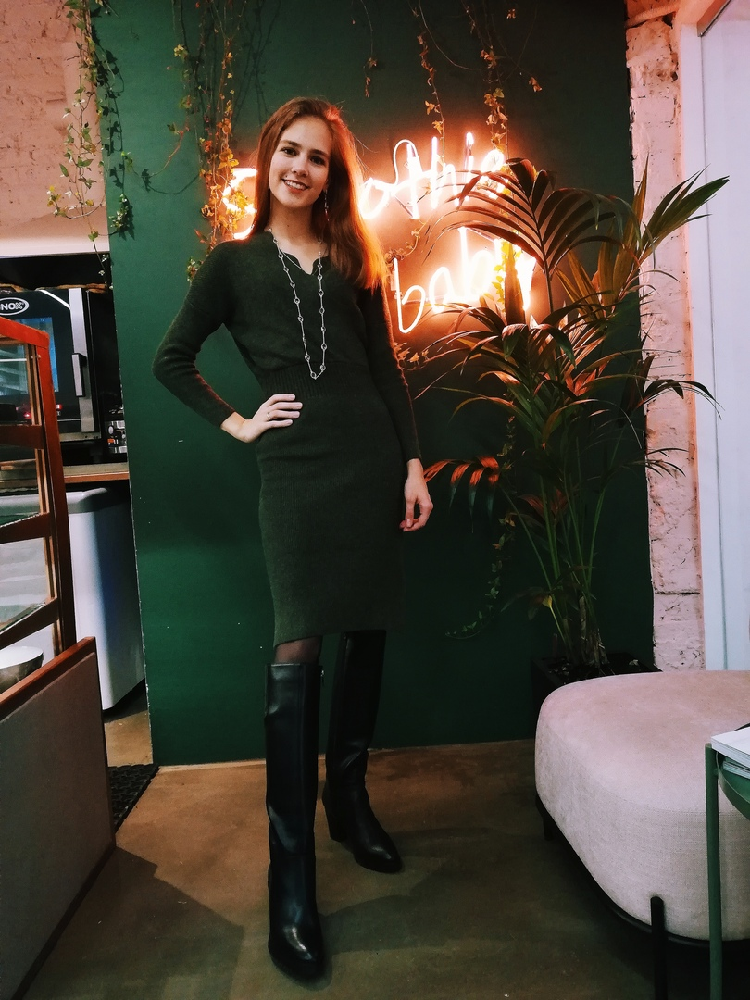
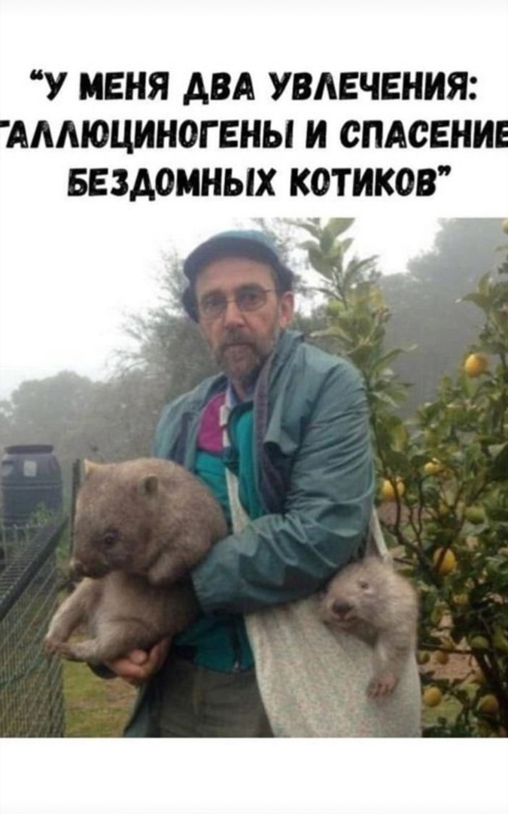
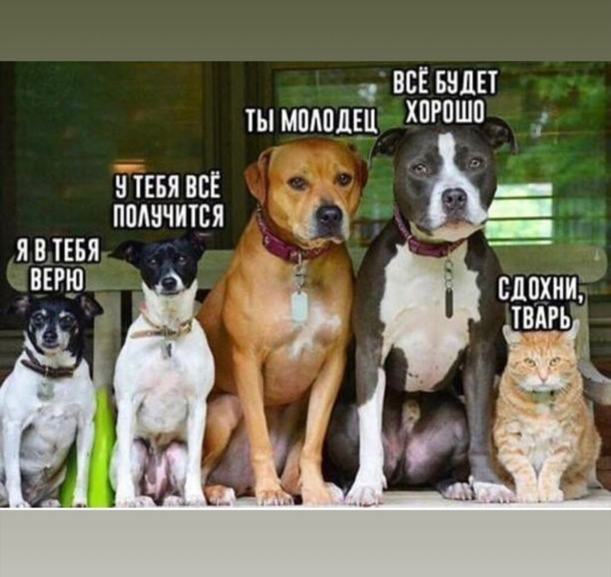
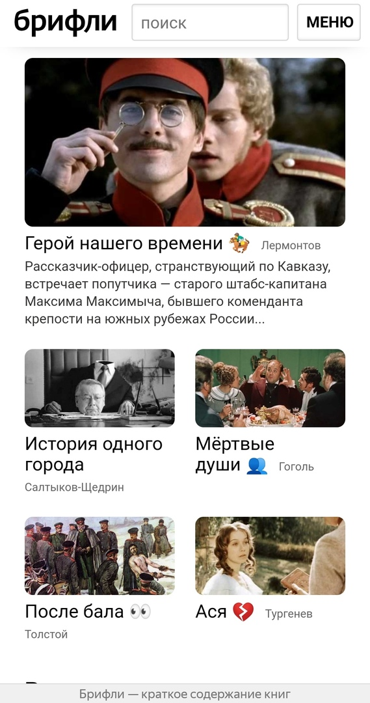
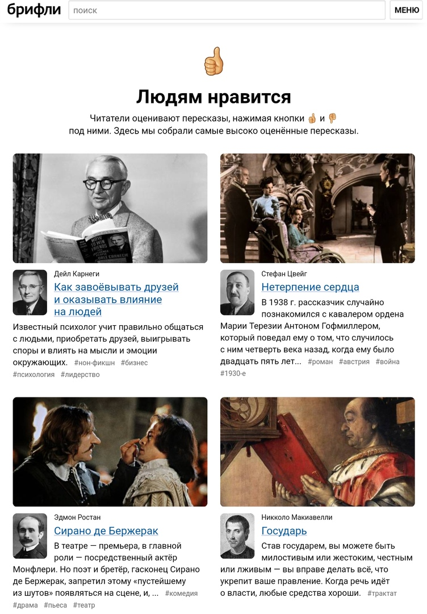

Величают меня Шебунина Серафима Александровна.Учусь на филологическом факультете НИУ ВШЭ.Занимаюсь исследованием творчества Е.Водолазкина. Как ни банально, литература занимает лидирующую позицию в моей жизни.Я не представляю своего досуга без зарубежных фильмов 90-х и при первой же возможности выбираюсь путешествовать.Главное-обожаю котиков.
 
Существует несправедливое высказывание,будто филолог и технологии-вещи несовместимые.Это заблуждение легко опровергнуть,ведь современные технологии необходимы филологу прежде всего для того,чтобы эффективно и оперативно заниматься своей деятельностью,которая неминуемо связана с огромным количеством информации,которую нужно обрабатывать. Поистине профессиональный филолог способен обратить современные технологии на благо науки,так как они способны расширить возможности изучения.
 
| Достоинства | Недостатки |
|---|---|
|
Интуитивность интерфейса за счёт минимализма и подходящих картинок Произведения разбиты по разделам и есть поиск Обратная связь.Всегда можно предложить идею,попросить новый пересказ |
Пересказы пишутся разными авторами,порой компетентность которых сомнительна Нет цензуры в комментариях Отсутствие в соц.сетях |